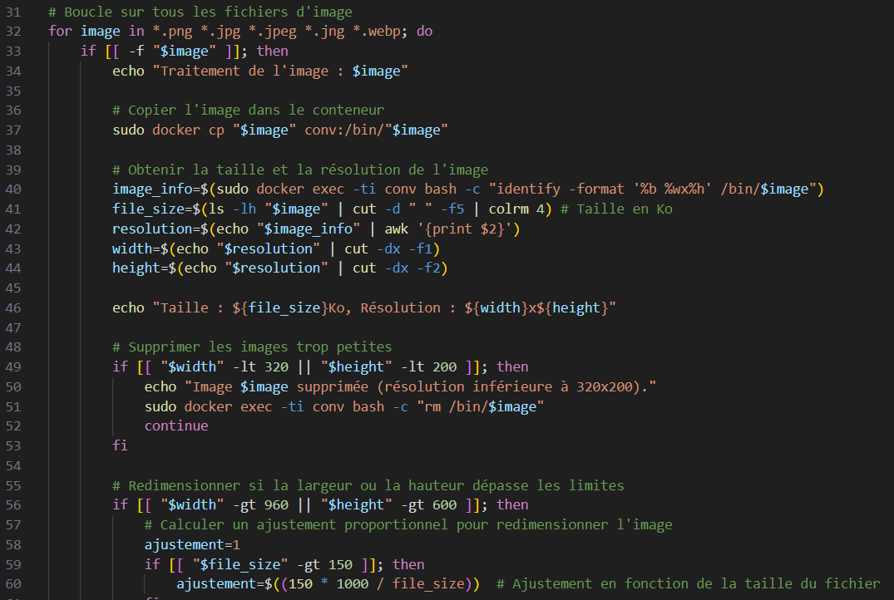
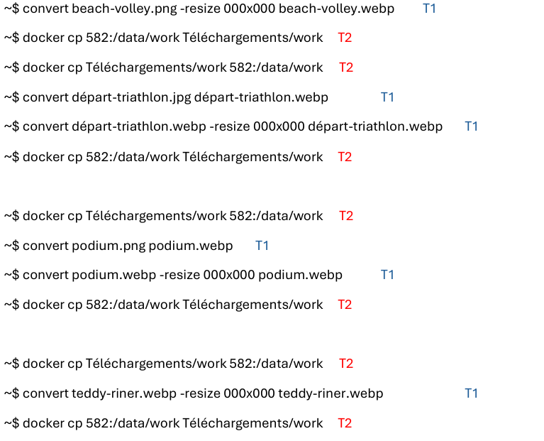

Opération Docker
Docker est une technologie professionnelle très utile dans certains environnements. Aussi appelée technologie de conteneurisation, elle permet d’automatiser le déploiement des applications dans des environnements isolés et reproductibles. Les développeurs peuvent ainsi lancer un conteneur, tester du code, puis le supprimer rapidement, sans que cela n’impacte le système principal. Ce n’est là qu’un aperçu de tout ce que permet Docker. Dans le cadre de ce projet, nous avons travaillé en groupe sur la création d’un programme en PHP, destiné à traiter automatiquement des photos pour une équipe de développeurs web. Nous avons manipulé différents types de fichiers : CSV, HTML, PNG, afin de répondre aux besoins de futurs collaborateurs, tout en garantissant portabilité et compatibilité grâce à l’environnement Docker.
